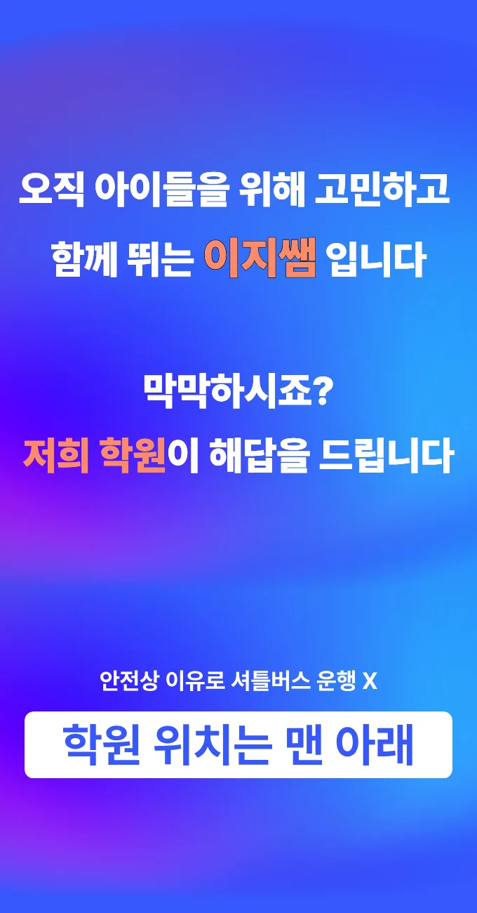

첫째로, 교육 목표와 학생 성향을 명확히 정의하고 주변 시설을 조사해요. 둘째로, 강사의 전문성을 확인하기 위해 경력과 교육 방식을 비교해요. 또다른 중요한 요소는 수업 시간과 교통 편의성을 검토하는 것이에요. 마지막으로, 실제 이용 후기를 수집해 만족도와 효과를 판단해요. 비산에서는 다양한 비산 고등학원들이 밀집해 있어 선택 시 신중히 비교해야 해요. 이러한 절차를 거치면 보다 맞춤형 교육 환경을 찾을 수 있답니다.
초등 저학년은 시각적 자료와 놀이 중심 활동이 학습 흥미를 끌어올려요. 비산 지역 특성상 작은 공동체 분위기가 형성돼 협동 학습이 자연스럽게 이루어집니다. 초등 고학년은 문제 해결 능력을 키우는 프로젝트 기반 과제가 효과적이에요. 중학생은 논리적 사고를 강화하는 토론과 실전 모의고사가 핵심 포인트입니다. 고등학생은 대학 입시 전략과 심화 과목 심층 분석을 통해 목표 달성을 돕습니다. 전체 학년에게는 단기 목표와 장기 로드맵을 함께 설계해 지속적인 동기 부여가 이루어집니다. 학습자 개별 차이를 존중하면서 맞춤 피드백을 제공하는 시스템이 큰 장점이에요. 수업 시간은 집중도가 높은 짧은 구간으로 나누어 피로도를 최소화합니다. 학부모와 정기적인 소통을 통해 진행 상황을 공유하고 조정하는 과정이 포함됩니다. 학습 효과를 높이기 위해 교재 선택에서도 최신 교과서를 우선 사용하고 있습니다. 학생 개개인의 성장 속도에 맞춰 보강 수업을 제공해 지속적인 발전을 돕습니다.
와와학습코칭센터는 반복 노출 빈도 관리 시스템을 활용해 학습 리듬을 최적화해요. 주요 대상은 중고등학생으로, 과학수학영어 등 전과목을 체계적으로 다루는 커리큘럼을 제공해요. 정시상담 500,000원과 수시상담 500,000원의 수강료 구조가 명확하고, 학교별 시험에서 자주 출제되는 과학 개념을 정리해 실전 감각을 키워요. 학습 습관을 분석해 맞춤 피드백을 주는 것이 큰 강점이에요
| 학원명 | 와와학습코칭학원 |
| 수강료 | 정시상담 500,000원 | 수시상담 500,000원 |
CURRICULUM
커리큘럼은 주요 오답 유형을 집중 분석하고, 주제별 해설 수업을 통해 개념을 재정립하는 방식으로 구성돼요. 수업은 아이들의 귀가 동선을 고려해 비산 고등학원 인근에 위치한 교실에서 진행되며, 매주 새로운 문제 유형을 추가해 실전 감각을 유지하도록 설계돼요. 특히 발표력이 부족한 학생을 위해 그룹 토론 시간을 별도로 배정해 자신감을 키우는 데 초점을 맞추고 있어요. 시험 기간에도 평소 학습 루틴을 유지하도록 지원해 급격한 학습량 변동을 최소화하고 있어요.
학습 과정에서 발생하는 실수를 체계적으로 관리하면 정답률을 크게 올릴 수 있어요. 수학 실수노트를 활용해 오답을 기록하고, 반복 학습을 통해 25% 이상의 정답률 상승을 기대할 수 있거든요. 이런 방식은 학생이 스스로 문제를 해결하도록 유도해 자기주도 학습 능력을 키우는 데도 도움이 돼요. 또한 비산 고등학원에서는 학생별 약점을 분석해 맞춤형 복습 계획을 제공하므로 효과적인 학습 관리가 가능해요. 지역 내 학생들은 이러한 체계적인 접근을 통해 학습 효율을 높일 수 있답니다.
학부모는 지속 가능한 학습 습관을 먼저 가르치는 것이 중요하다고 생각해요. 아이는 교재를 참고용으로만 활용하고, 수업 내 개념 흐름을 따라가요. 선생님은 핵심 포인트를 강조하며 활동 중심 수업을 진행해요. 주변 비산 고등학원들은 고정 루틴을 강조하지만, 이곳은 유연한 계획 관리로 실패를 최소화해요. 전문가들은 이런 접근이 내신 대비와 점수 향상에 효과적이라고 말해요.
특히 초등학교 사 학년 남자아이에게 추천하고 싶어요. 평소에는 차분하게 문제를 잘 풀지만, 지문이 긴 문제가 나오면 집중력이 쉽게 흔들리는 경향이 있거든요. 또한 학교나 다른 활동 때문에 학습 마무리를 할 시간이 부족하여 뒤죽박죽이 되는 아이들에게도 좋아요. 짧은 시간이라도 효율적으로 집중해서 마무리하는 방법을 알려주기 때문이죠. 완벽하지 않아도 괜찮으니, 습관을 잡고 싶은 아이에게 딱 맞는 환경을 제공해요. 아이가 스스로 공부하는 즐거움을 느낄 수 있도록 곁에서 지켜봐 주는 것이 중요하답니다.
수업을 들은 학생은 선생님의 따뜻한 한 마디가 큰 힘이 된다고 전했어요. 예습 자료가 인쇄돼 있어 언제든 복습할 수 있었고, 서술형 첨삭 시간 덕분에 글쓰기 자신감이 크게 상승했습니다. 목표 재정립 과정에서 태도가 긍정적으로 변했으며, 차분한 설명 덕분에 복잡한 개념도 쉽게 이해할 수 있었다는 이야기가 많아요. 비산 학부모 사이에서도 입소문이 퍼지고 있습니다.